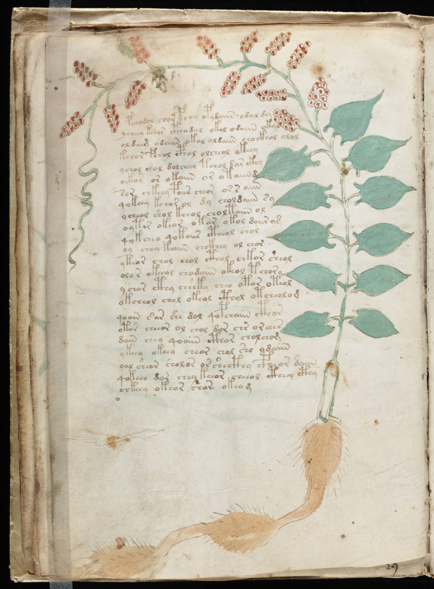

f17v
1pchodol chor fchy opydaiin odaldy2ycheey keeor cthodal okol odaiin okal3oldaim odaiin okal oldaiin chockhol olol4kchor fchol cphol olcheol okeeey5ychol chol dolcheey tchol dar ckhy6oekor or okaiin or otaiin d7sor chkeey poiis cheor os s aiin8qokeey kchar ol dy choldaiin sy9ycheol shol kchol choltaiin ol10oytor okeor okar okol doiiram11qokcheo qokoiir ctheol chol12oy choy koaiin chckhey ol chor13ykeor chol chol cthol chkor sheol14olo r okeeol chodaiin okeol tchory15ychor cthy cheeky cheo otor oteol16okcheol chol okeol cthol otcheolom17qoain sar she dol qopchaiin cthor18otor cheeor ol chol dor chr or eees19dain chey qoaiin cthor chol chom20ykeey okeey cheor chol sho ydaiin21oal sheor sholor or shecthy cpheor daiin22qokeee dar chey keeor cheeol ctheey cthy23chkeey okeor char okeom
